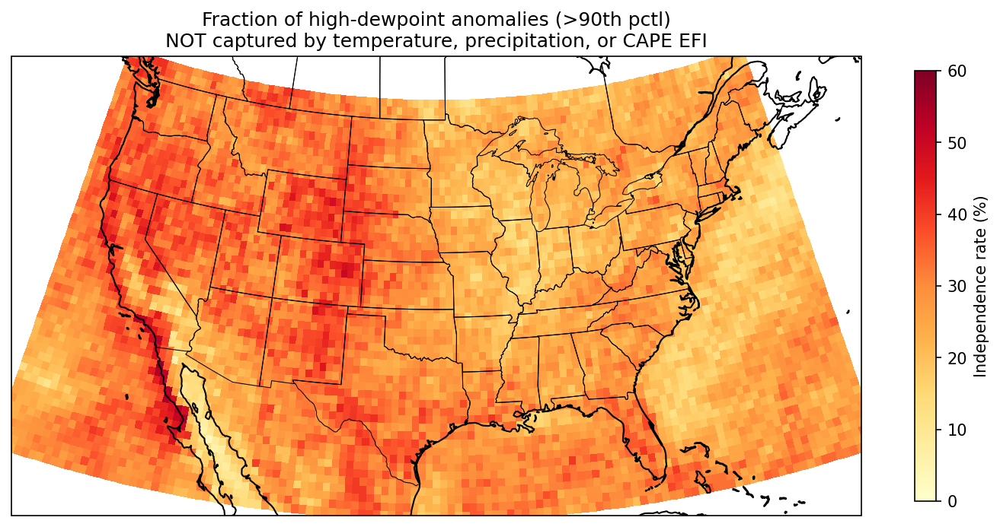
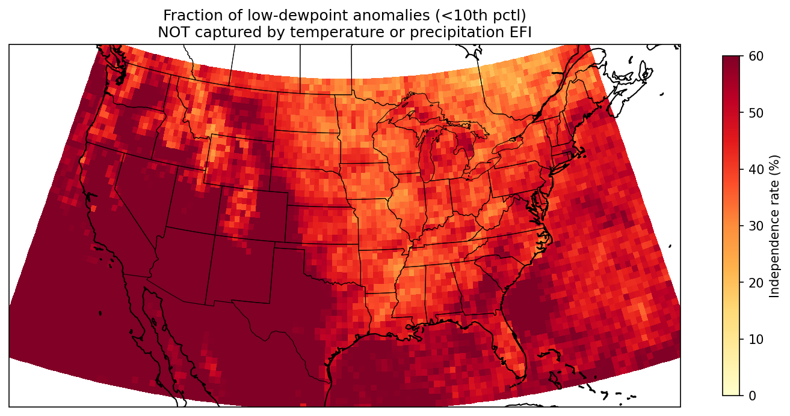

EFI
<0.5
0.5
0.6
0.8
0.9
Forecast Days
Loading…
The ECMWF EFI suite has no moisture variable. Dewpoint drives convective potential, fire weather risk, and comfort independently of existing parameters.
The variable is the daily maximum dewpoint — the highest value across each forecast day, taken the same way for both the live ensemble and the M-climate reforecasts. EFI and SOT here describe how anomalous that daily peak is, not the dewpoint at any single hour.
High tail: 27.6% independence — 1 in 4 moisture events invisible to current EFI.
Low tail: 53.9% independence, 66.3% in summer. Over half of fire-season dryness events produce zero EFI signal.


How this differs from operational ECMWF EFI
This product is built entirely on GEFS, not the ECMWF IFS. Both the operational ensemble (31 members) and the M-climate reforecasts (5 members per day, 2000–2019) come from GEFS.
The M-climate day-of-year window is ±7 days, narrower than ECMWF's ±17.5-day (5-week) window. GEFS reforecasts initialize daily, so a ±7-day window still yields roughly 1,500 samples per day-of-year — comparable sampling to ECMWF's wider window over twice-weekly initializations. The narrower window preserves sharper seasonal structure, such as monsoon onset.
The EFI and SOT formulas are identical to ECMWF's published methodology (Lalaurette 2003; Zsótér 2006). The only departures are the model source and the climate window above.
Computation is done in specific humidity (q) space, which is monotonically equivalent to dewpoint temperature. Working in q avoids numerical issues with the Clausius-Clapeyron conversion at extreme values, and the resulting percentiles map back to dewpoint without distortion.